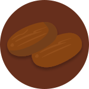
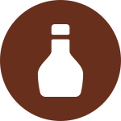
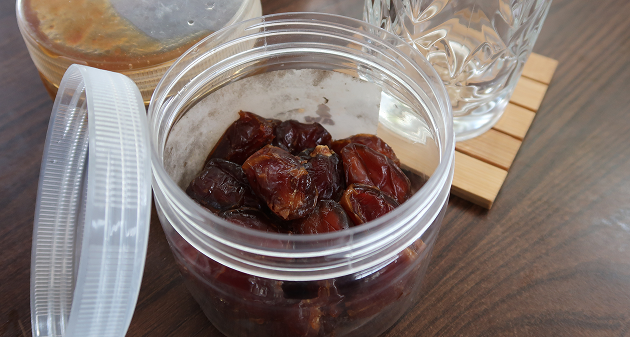
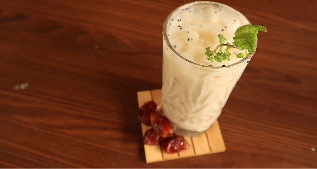

It has a balanced sweet and sour taste, where the distinctive sweetness of the dates appears first, followed by a slightly tangy yogurt aftertaste.
NUTRITION

KURMA
High in Fiber, Potassium, Vitamin B6, and Magnesium.

KURMA SYRUP
Fructose/Glucose and Iron.

YOGHURT
Protein, Calcium, Probiotics, and Fat.
CALORIES
The total calories of this drink range from 350–405 kcal, since dates are rich in calories. This drink can become an “energy bomb” because of its high calorie content, refreshing taste, and natural sugars that help restore the body's balance after fasting.

INGREDIENTS: 180/PORTION
- Yoghurt : 70–80 ml
- Water : 60–70 ml
- Date Syrup : 40 ml
- Date : Garnish (3)
- Mint : Garnish
- Ice : To Fill Up

HOW TO MAKE:
- Add Water and Yoghurt together according to the recipe.
- Mix them together until they fuse together.
- Add the Date Syrup and mix.
- Add ice.
- Chop a few dates and place on top.
- Add a mint leaf for garnish.
- Don't forget to serve!